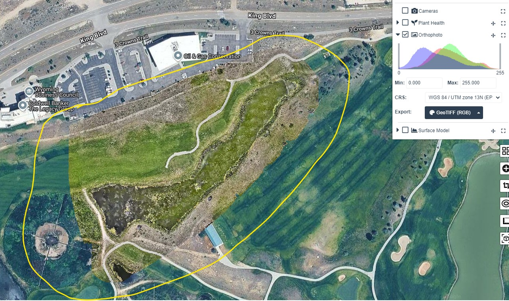
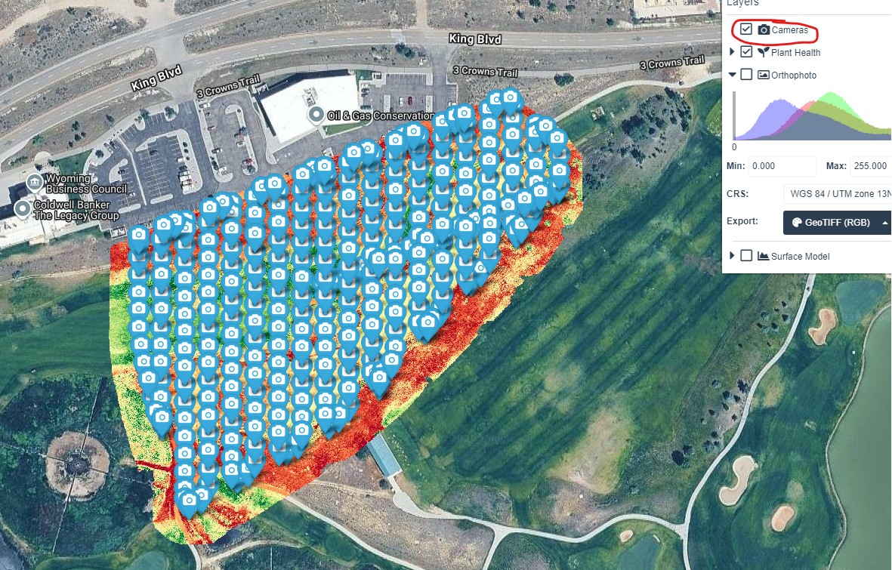
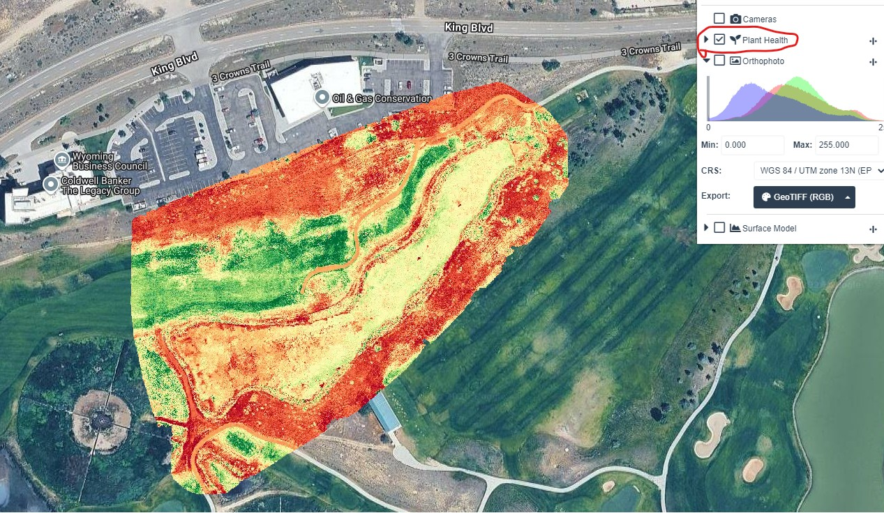
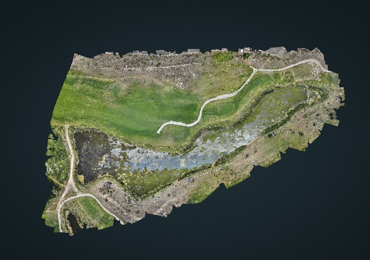
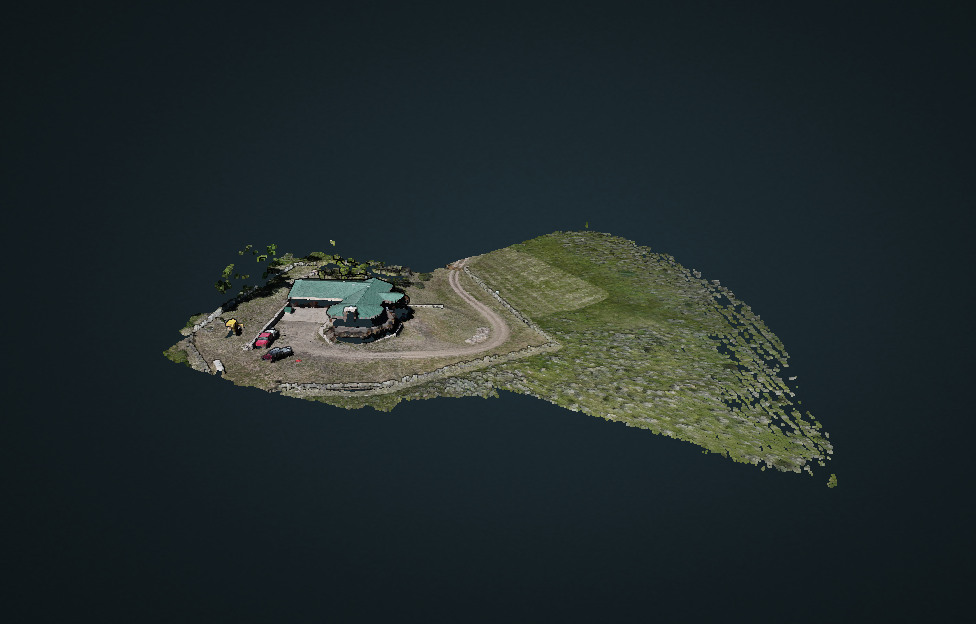
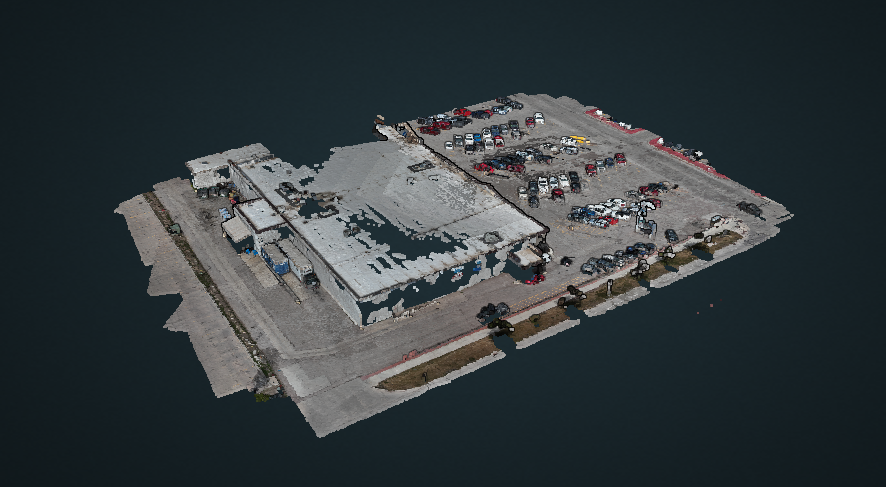
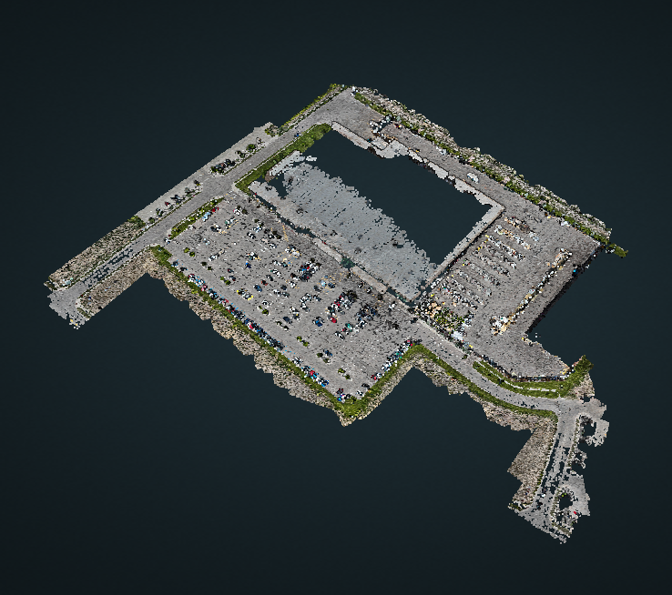

WHERE WE HELP
Work that is easier to see from above.
Here are a few ways a drone can save time and give you a better handle on what is happening. Below is a real SBDC demonstration mission showing the kind of information one flight can produce.
Crop work, field mapping and ranch support.
See more of the ground without spending the day driving it.
Sites, pipelines and equipment.
Clear visual and thermal information when a closer look matters.
Pasture, livestock and infrastructure.
Cover more country and keep a better eye on what is out there.
REAL MISSION
SBDC demonstration flight.
This demonstration flight for the SBDC shows four useful ways to look at the same site: a detailed orthomosaic, the camera coverage used to build it, a plant-health visualization, and a 3D surface model.




3D IMAGING
Look at the site from more than one angle.
A 3D model is built from many overlapping drone photos. Software lines up the shared details in those photos to create a model you can rotate, view from above, and explore from different angles.
It is useful for visual documentation, site overviews, planning conversations and showing access, layout and conditions that are not easy to understand from the ground. It is not a substitute for a professional survey unless the project is specifically scoped and delivered for that purpose.



YOUR JOB
Have a job you need help with?
Tell us what you are dealing with and what you need to see. We will talk through the job and whether a drone is the right tool.